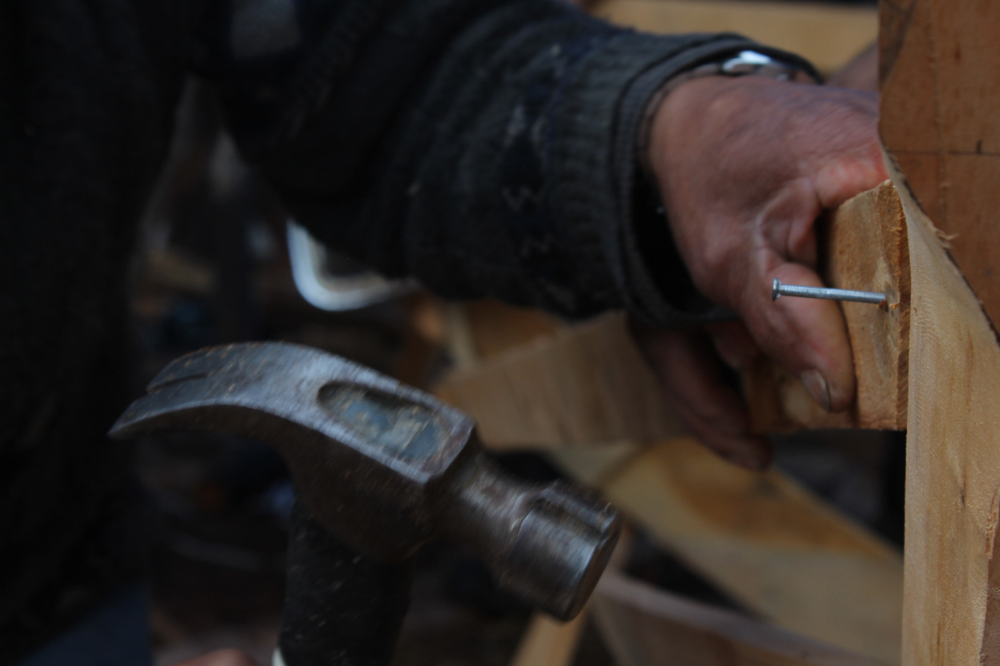

Patrimonio
Una práctica que se construye desde el presente

Entendemos el patrimonio como una construcción colectiva y dinámica. Nos interesa investigar cómo los saberes, prácticas, objetos y paisajes adquieren significado para las comunidades, pero también preguntarnos qué reconocemos como patrimonio, quiénes participan de ese reconocimiento y cómo podemos relacionarnos con él desde el presente.
Desde Tortel y la Patagonia austral desarrollamos proyectos que conectan patrimonio, creación e investigación, abordando oficios, alimentación, memorias, paisajes y prácticas culturales. Más que conservarlos como expresiones inmóviles del pasado, buscamos generar espacios para conocerlos, discutirlos, transmitirlos y activar nuevas relaciones con ellos.
Una mirada crítica sobre el patrimonio
Trabajar con patrimonio implica también hacerse preguntas. Nos interesa observar qué relatos construimos sobre los territorios, qué conocimientos han sido reconocidos y cuáles permanecen fuera de los discursos oficiales.
Por eso, nuestros proyectos combinan investigación, trabajo comunitario y creación para abordar el patrimonio desde distintas perspectivas y generar nuevas lecturas sobre las prácticas culturales y su relación con el presente.
pensar
Investigar, documentar y generar nuevas preguntas sobre aquello que reconocemos como patrimonio.
hacer
Comprender que los saberes también existen en los cuerpos, los gestos, los materiales y las prácticas cotidianas.
transmitir
Crear espacios para que conocimientos y experiencias circulen entre personas, generaciones y territorios.
activar
Poner el patrimonio en movimiento mediante la creación, la educación y nuevas formas de relacionarnos con él.